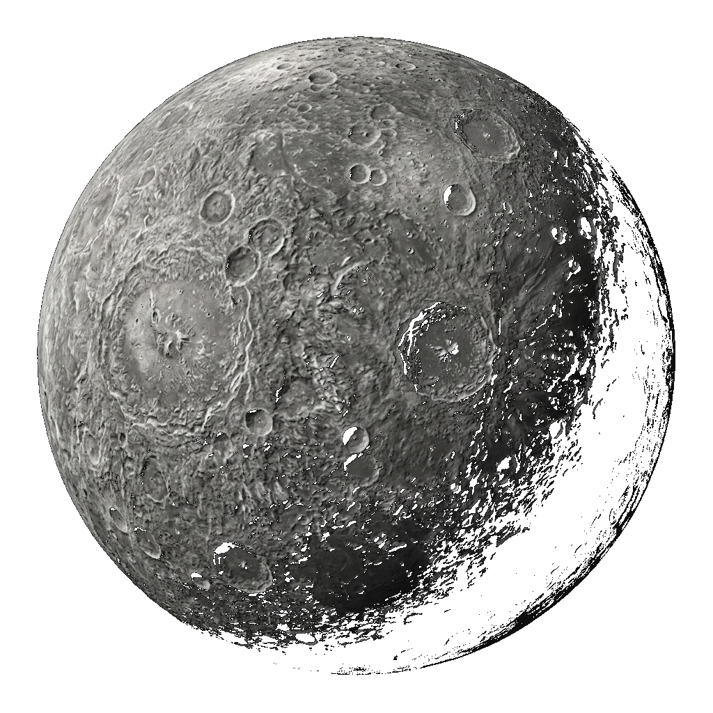
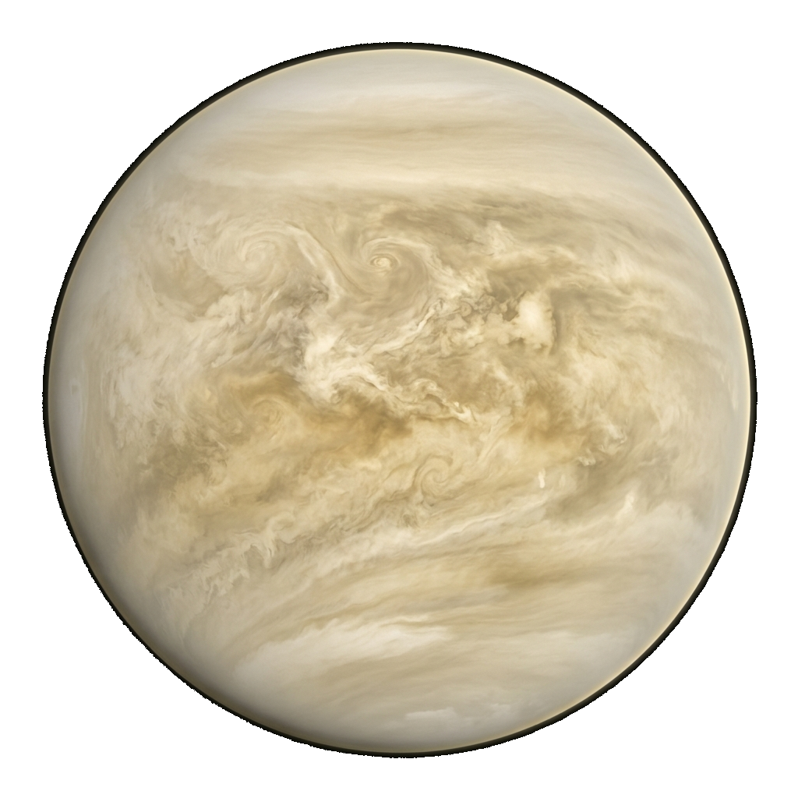
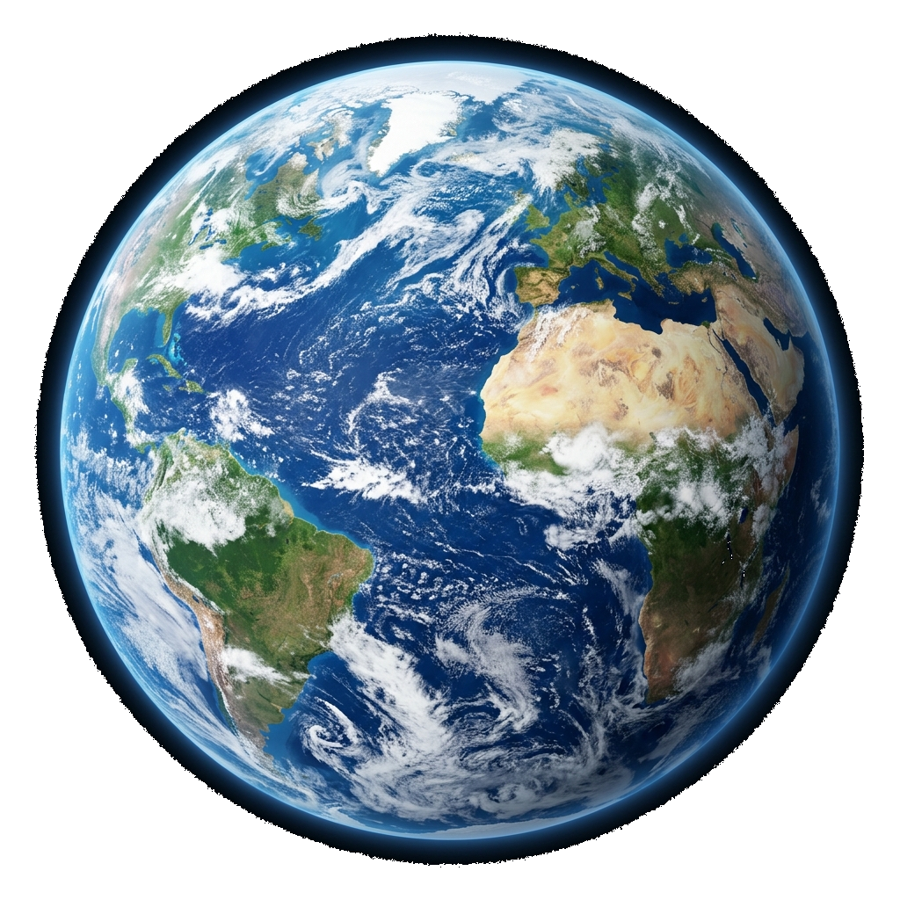
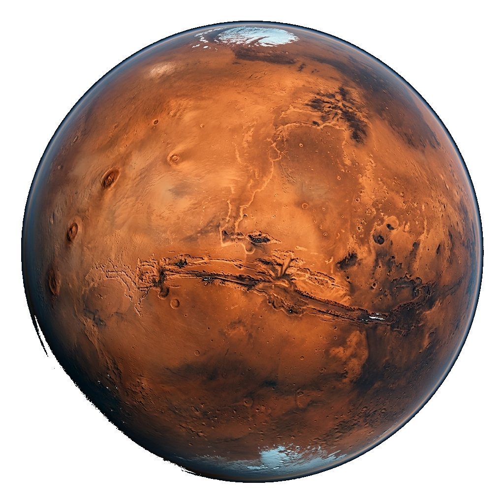
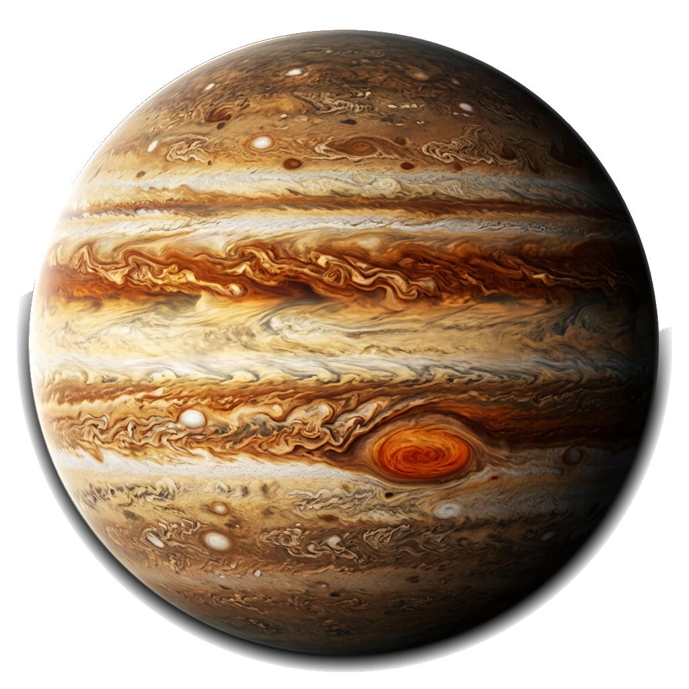
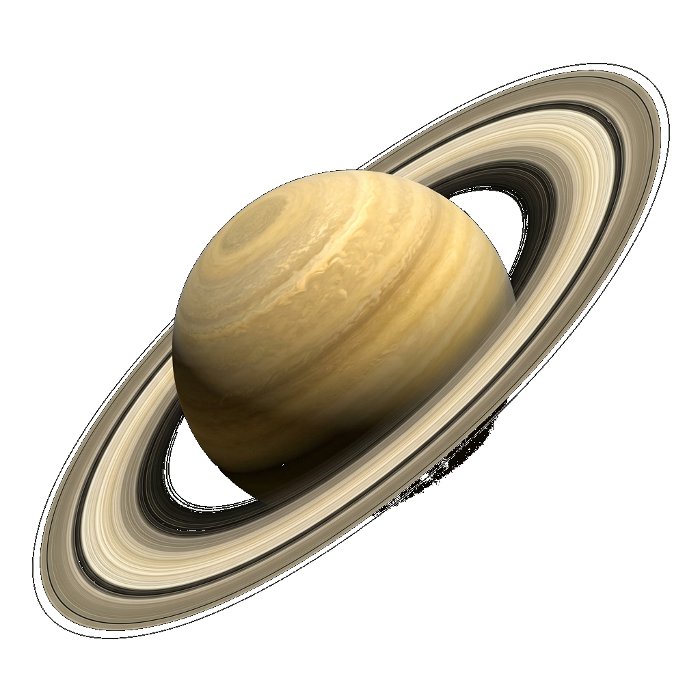
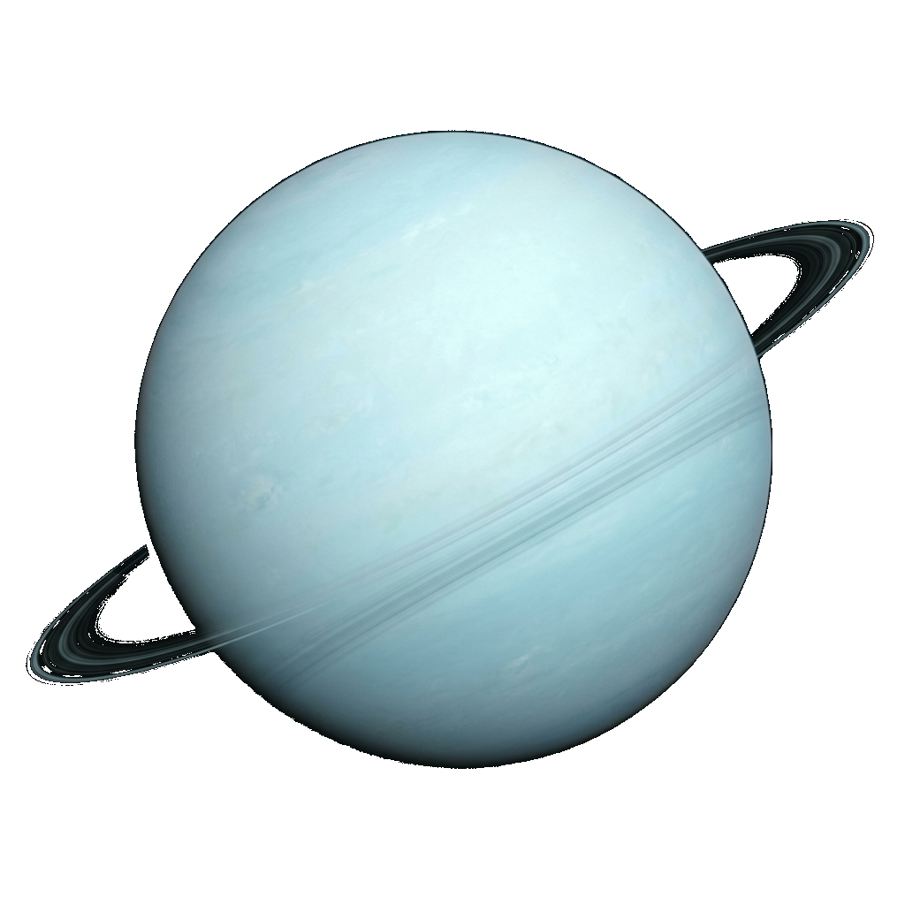
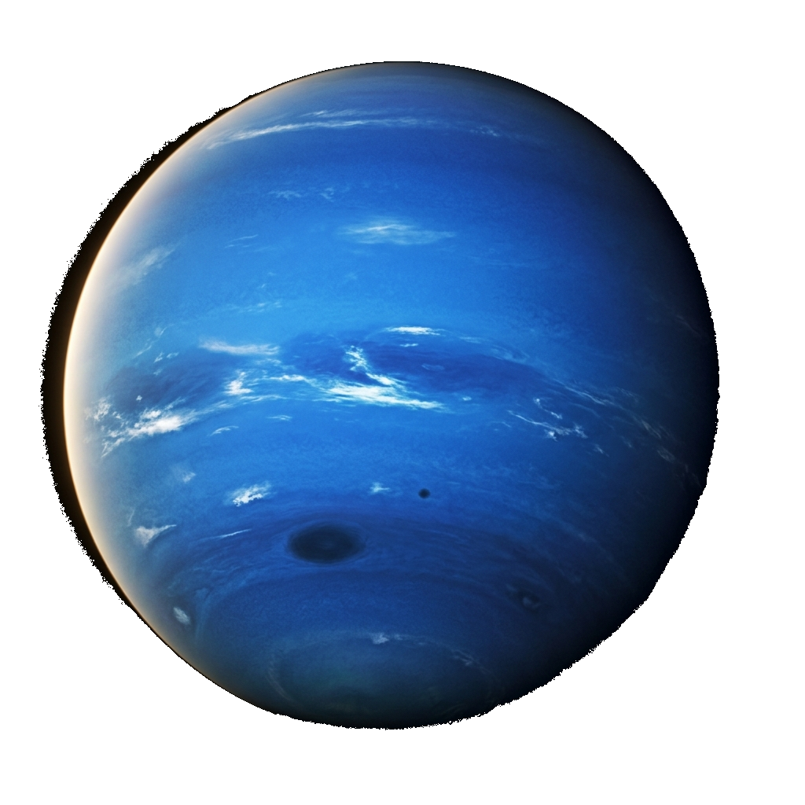

Scroll to begin your journey
Eight worlds. One scroll. Infinite wonder.
The smallest planet in our solar system and nearest to the Sun, Mercury races around our star every 88 Earth days. Despite being closest to the Sun, it is not the hottest — that title belongs to Venus. Its surface is heavily cratered, scarred by billions of years of cosmic bombardment.
Venus is Earth's twisted twin — similar in size and mass, yet utterly alien. Shrouded in thick clouds of sulphuric acid, it traps heat through a runaway greenhouse effect, making it the hottest planet. Its surface pressure is 90× that of Earth, and it rotates backwards relative to most planets.
The pale blue dot. Our home. The only known world in the universe confirmed to harbour life. Earth's liquid water, protective magnetic field, and nitrogen-oxygen atmosphere create the perfect cradle for 8.7 million species — and counting. From space, the oceans give it a brilliant, unmistakable blue glow.
Mars has captivated humanity for centuries. Its distinctive red hue comes from iron oxide (rust) covering its surface. Home to Olympus Mons — the tallest volcano in the Solar System — and Valles Marineris, a canyon stretching 4,000 km. Mars is humanity's best candidate for future colonisation.
A behemoth of the Solar System — Jupiter is so large that all other planets could fit inside it. Its Great Red Spot is a storm that has raged for over 350 years, wider than Earth itself. Jupiter's immense gravity acts as a cosmic shield, deflecting asteroids and comets away from the inner planets.
The jewel of the Solar System. Saturn's iconic rings are made of billions of chunks of ice and rock, ranging from tiny grains to pieces as large as houses. Despite its massive size, Saturn is the least dense planet — it would float on water! Its moon Titan has liquid methane lakes on its surface.
Uranus orbits the Sun on its side — its axis is tilted at 98°, likely due to a massive collision early in the Solar System's history. This gives it extreme seasons where each pole experiences 42 years of continuous sunlight followed by 42 years of darkness. Its cyan-blue colour comes from methane in its atmosphere.
The most distant planet from the Sun, Neptune is a world of roaring supersonic winds and swirling storms. Its largest moon Triton orbits in the opposite direction — a captured Kuiper Belt object. Neptune was the first planet predicted by mathematics before being directly observed, in 1846.